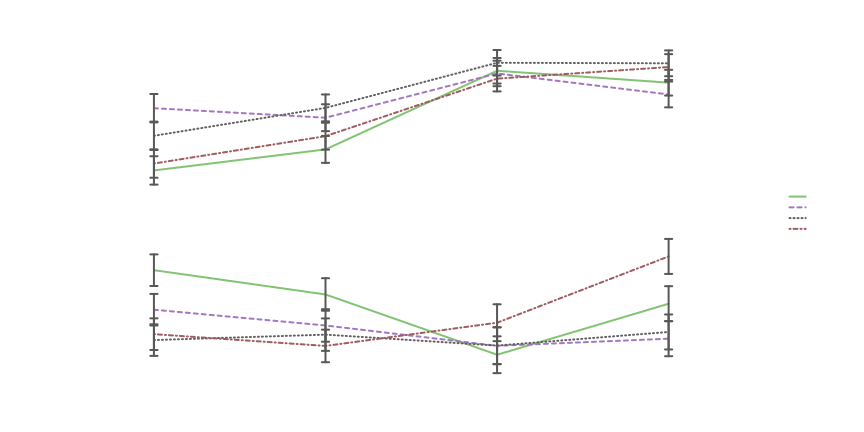

This example looks at a few different results from a set of studies: osf.io/963gp.
Built with R 4.3.1
Setting up
First, be sure splot is loaded:
You can read in the data directly from OSF:
data <- read.csv("https://osf.io/download/crgkn")Or download the file from osf.io/crgkn.
Then have a look at the data. These are participant and condition related variables, which will be particularly useful for splitting:
data[493:502, c(1:3, 80:82)]
#> reply Study ParticipantID Style Topic Label
#> 493 First 3 3704301285 Feminine Life Course Female
#> 494 First 3 7482037219 Masculine Relational Male
#> 495 First 3 1035132554 Masculine Relational Male
#> 496 First 3 8764748766 Feminine Relational Male
#> 497 First 3 7422386495 Feminine Life Course Female
#> 498 First 3 8875594201 Feminine Life Course Male
#> 499 First 3 5473944690 Feminine Life Course Female
#> 500 First 3 3828484938 Feminine Relational Male
#> 501 First 3 5862456995 Feminine Relational Male
#> 502 First 3 6159447371 Feminine Relational MaleCalculating Language Style Matching
Each of these studies had participants reading a prompt and writing advice in response. The language from both the prompts and responses were analyzed with the Linguistic Inquiry and Word Count (LIWC) program, which categorizes words based on its dictionary. Using these categories, we can look at forms of language style matching—how similar participants’ reply is to the prompt they read.
First, the prompts and their LIWC categories are included in a separate file:
prompts <- read.csv("https://osf.io/download/xm6ew")Each of the strings in prompts’ Type variable
corresponds to the topic, style, and study of each participant’s reply.
We want to compare the language style of each prompt to its replies, so
we’ll make a Type variable to match in data:
data$Type <- with(data, paste0(
ifelse(Topic == "Relational", "R", "LC"),
ifelse(Style == "Feminine", "F", "M"),
Study
))Now we can actually calculate Language Style Matching (LSM). A Standard LSM calculation (from Gonzales, Hancock, & Pennebaker, 2009) uses 9 LIWC function word categories. We’ll save these names to easily identify them in each dataset:
cats <- c(
"ppron", "ipron", "article", "adverb", "conj", "prep", "auxverb", "negate", "quant"
)This form of LSM uses inversed Canberra distance as a measure of similarity, but there are many similarity metrics, so we might compare a few:
# name the metrics we want to calculate.
metrics <- c("canberra", "cosine", "euclidean")
# make empty columns for each in the dataset.
data[, metrics] <- NA
# then loop through each condition.
for (c in unique(data$Type)) {
# pull in the prompt for the given condition.
comp <- prompts[prompts$Type == c, cats]
# identify the subset of data replying to this prompt.
su <- data$Type == c
# then perform each calculation between each row in data and the prompt.
data[su, metrics] <- t(apply(data[su, cats], 1, function(r) {
c(
sum(1 - abs(r - comp) / (r + comp + .0001)) / length(r),
sum(r * comp) / sqrt(sum(r^2 * sum(comp^2))),
1 / (1 + sqrt(sum((r - comp)^2)))
)
}))
}Alternatively, you can use the lingmatch package to perform these calculations more efficiently:
library(lingmatch)
metrics <- c("canberra", "cosine", "euclidean")
data[, metrics] <- lingmatch(
data, prompts,
group = Type, metric = "all", type = "lsm"
)$sim[, metrics]Looking at Language Style Matching
First, we can look at distributions in a few different ways:
splot(data[, metrics])
# mv.scale z-scores multiple y variables to make them easier to compare.
splot(data[, metrics], mv.scale = T)
# su subsets the dataset to show only replies to the
# masculine relational prompt in Study 4.
splot(data[, metrics], data, Type == "RM4", mv.scale = T)The different similarity metrics we calculated a pretty highly correlated:
cor(data[, metrics])
#> canberra cosine euclidean
#> canberra 1.0000000 0.7823261 0.7463881
#> cosine 0.7823261 1.0000000 0.8556146
#> euclidean 0.7463881 0.8556146 1.0000000But their relationship is not quite linear:
# cbind (or list) is another way to enter multiple y variables.
# when a transformed version of the x variable is added,
# it is used to adjust the prediction line.
splot(cbind(canberra, cosine) ~ euclidean + log(euclidean), data)They also vary differently between prompts and studies:
splot(data[, metrics] ~ prompt, data, Study > 2, between = Study, mv.scale = T)In Studies 3 and 4, each participant replied to two prompts, so we can look at changes in their matching from one prompt to another (it looks pretty random, which is generally what we want):
# turning ParticipantID into characters or setting lim to FALSE
# will prevent it from being split.
# other aspects are just cosmetic;
# line.type affects the appearance of the lines,
# and mxl spreads the x labels a little more.
splot(
canberra ~ reply * as.character(ParticipantID), data, Study == 4,
line.type = "l", mxl = c(1, 2)
)Person Perception Ratings
After writing advice to the authors of each prompt, participants also completed ratings of the text and author.
One potentially interesting rating was of relative socioeconomic
status (relativeSes; “Relative to your own, where would you
place the author’s socioeconomic status?”; -3 to 3).
# make a new variable to look at Study and Topic without Style.
Study_and_Topic <- with(data, paste0("S", Study, " ", Topic))
splot(relativeSes ~ Study_and_Topic * as.factor(Style), data, type = "bar")A difference between styles doesn’t appear in each topic, but when it does, the incongruent style is rated as lower in status than the congruent style (considering relational to be a feminine topic, and life course to be a masculine topic).
The inconsistency between prompts may be explained by setting; the first two life course prompts were largely job related, and the relational topics were not. The prompts in Study 4 set out to reverse this, with the relational topic set in a workplace, and the life course topic at least not directly related to a job.
It can sometimes help to look at the same pattern a different way, and compare it to that of other variables:
# levels reorders the prompt variable to make the trends a little easier to see.
splot(
cbind(TextQuality, Behavioral, pp_like, relativeSes) ~ prompt, data,
between = Study,
mv.scale = T, levels = list(prompt = c(4, 2, 1, 3))
)
In Study 3, each of the perception related variables seem to hang
together for the most part, with ratings of the text
(TextQuality), ratings of the author
(relativeSes), and disposition toward the author
(pp_like and Behavioral) all generally
increasing from the masculine relational prompt to the masculine life
course prompt. In contrast, in Study 4 only the SES rating remains
similar, with liking staying the same between prompts, and text and
quasi-behavioral ratings generally decreasing from the masculine
relational to the masculine life course prompt.
Aside from being set it a workplace, the relational prompts in Study 4 also differed from the previous relational prompts in that their content was somewhat more striking (concerning a coworker’s potential abuse of their autistic child). This may have influenced the perception of text quality in particular, as that appears to be the most aberrant of the perception ratings for those topics.
These are, of course, loose interpretations, but more exploration of the data may offer clearer pictures.